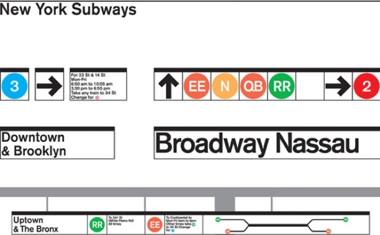
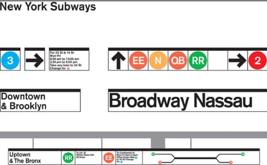

Massimo Vignelli

Massimo Vignelli, a well celebrated graphic and industrial designer from the 20th century, led by modernism and simplicity, his work ethic is based around the use of geometric design. Covering in nearly all fields of design, such as advertising, identity, packaging and furthermore, he hoped in evolving a design aesthetic that would be known. Co-founding Unimark International design company in 1964, it became one of the largest design studios in the world. Especially, drawing attention on graphic systems and successfully transforming everyday needs by showcasing functionality through a social value of design, and making an understanding of the Modern Movement.
Throughout the Modern Movement in the 20th century, artists have been able to roam freely with their own styles and materials, forming art by experimenting with society and culture, and reflecting on realities of modern societies. The Movement was defined as the rejection of traditional arts and compressing them into abstractive art showcasing a new perspective in producing expressive, established designs. This created an instinct for artists to reflect on certain subjects, challenging on how the world could handle and interpret. In either way, throughout this essay, learning about the works of Vignelli, he will enable me to take upon what the true essence of modernism is, understand how to adopt clearer possibilities and ideas in design, including understanding why he has changed the way designers think, but also, the impact he has made for all users of design.
The whole aspect that Massimo portrayed in graphic design was followed by designing for corporate companies, popularising the typeface “Helvetica”, and reshaping New York’s subway system.


The success story that Massimo encultured in typography was giving Helvetica (released in 1957) a statement that has since then been acknowledged from the 1960s to the present day. Created to be the change of how information was going to be presented, the typeface has grown to be the most popular typeface in modernism, often giving interest to digital designers because of its principles.
The main success of the typeface is mostly because of the reliability and liability that designers can comprehend with, Vignelli explained that
“In graphic design there was a certain vocabulary of elements and typefaces... Our goal was to simplify things. We were purposefully eliminating, simplifying, disregarding a lot of alternatives, to the point of then creating our own vocabulary.” (M. Vignelli - Eye Magazine 2008).
This surfaces that Helvetica outshine complications and is seen as showing a clear vision and cleanliness. Especially designs of different corporate brands; Bloomingdales, Knoll and American Airlines etc. indicates that design should not be ‘too much’, and the ‘vocabulary’ can be understood without too much processing, as well as having its own platform, allowing the typeface to be reused without exhausting it. Although, it have been over 60 years since Helvetica has been released, I feel like the typeface will always find way to not be overworked, especially it has been embedded in the typeface/design culture for many decades, forming its own individuality that it will be difficult for other typefaces to take over.
Branding identity is solely based on how a design can be interpreted through words and images, Vignelli, redesigned the look of the American Airlines in 1967, and was used for the next three decades. The branding of the logo showcases the use of “Helvetica”, simply by using letters of two As, adding colours of blue and red for American representation, as well as including a stylised eagle, known as the company’s corporate identity. Massimo expressed that in order to symbolise a new look, it is important to not “…stylise the eagle and make a cartoon out of it” (M. Vignelli), meaning to give the corporate identity “dignity”. This showcases structure he wanted to follow, by giving it an own sense of rule, conveying sensibility and simplicity which allows all designers to take upon on. Working best with Helvetica; the typeface has always given Massimo a sense of expression in incorporating with his character of work.
As for the ‘AA’ logo, it helped revolve what mattered in creating brands, stating that clarity is stronger than complexity creating timelessness for brand design in the 1960s. This is until his logo was stripped away in 2013, causing backlash, particularly from Vignelli . Vignelli expressed that
“There’s no need to change it. The logo doesn’t need change. The whole world knows it, and there’s a tremendous equity... I will not be here to make a bet, but this (new logo) won’t last another 25 years.” (M. Vignelli).
Taking upon his opinion, the new transition may be due to the history the logo has held for the company’s identity, and I find that understandable, mainly because the logo showcases the classic American Style, which captured the long decades the company has endured, and changing the identity could mean that it is a end of an era for a impactful design. However, although the new logo may look modern and help to fit the era, I feel like Massimo’s logo helped to convey what a good design is, especially by using simple elements and turning it into a form of identity, and scraping it takes away the past. However, bringing in a new present can commemorate a new beginning.
 

Before the changes of New York’s Subway System, it caused great complexity, three systems were merged into one, providing no clear principles in place, making user experience for city-goers hard to travel. This led the New York City Transit Authority to propose a commission to Unimark to develop a new, easy and clearer system. During the start of the process, Bob Noorda and Massimo Vignelli went through an analysis on four major stations and stated that the simple goal is to make New York easier to read and navigable. In 1972, the release of the new system came out, displaying an array of colours, each line having its own individual colour, a dot for each station, giving its main concept by Massimo called “dot to dot”. As for the making of the signages, coloured discs identified the trains and tracks with specific letters and numbers as communicational panels. The navigation system became “A system of logic”, securing needs for users, but also helping to redefine and reshape the city. In my view, It is important to secure a design identity which enables expression to be displayed, and capture viewers how they want New York to be foreseen. Massimo created a new era and chapter in identity, as well as design itself. Despite the map system being replaced years later due to inaccurate geographic locations, the map was considered as the best in the design community.
Overall, the structure of the navigation system has certainly given an impact of how design can be empowered throughout lives of users and viewers. A systematic design that would make experiences more understanding and enjoyable to use. Focusing on the design view, I think the map system reflected well especially as Massimo’s map system is the most recognised and has been given the utmost recognition. By showcasing the clarity of how simple geometric shapes can be used in different ways, it earns the title of benefiting what designers can follow, especially when the replaced map system was influenced by him. This continuously shows that Vignelli will always be considered for starting new trends, encouraging designers to be influenced so new ideas are generated.
To summarise, Massimo Vignelli dominates a large field in design culture from the past, as well as continuing to do so in the present, his design structure helped to enforce the true meaning behind great design, through carefully conceived structures. The sense of enforcing reality makes up modernism as a whole, replacing unsuccessful to successful, improving a visual outlook that viewers/designers would strive for, creating an image that would be liable in the end. He has contributed in showing responsibility of a good artist expressing that; “The life of a designer is a life of fight: fight against the ugliness.” (M. Vignelli), clarifying that in order to complete a design, challenges must be made and be surpassed, to find the solution that would change and improve visual perspective. As for myself, finding solutions expands and opens a clearer mindset, and Massimo’s creations is the prime of shaping design in society, particularly securing a spot for himself that specialises in delivering communicational methods in a different aspect and evaluating how far good design can go if it’s done correctly, which concludes why he is one of most important icons in modern design.
Archivio Grafica Italiana – American Airlines [Online – Article] http://www.archiviograficaitaliana.com/project/309/americanairlines Ceros Originals – How Graphic Design Legend Massimo Vignelli Cracked the NYC Subway System [Online – Journal] https://www.ceros.com/originals/massimo-vignelli-nyc-subway/ Conradi, Rau, JC, KR, (2010), Unimark International: The Design of Business and the Business of Design, Lars Müller Publishers, Baden/Switzerland [Book] Creative Blog - What Massimo Vignelli can teach designers today [Online – Journal] https://www.creativebloq.com/graphic-design/massimo-vignelli-61411897 [Accessed 31st December] Dallas Observer -The Designer of the Old American Airlines Logo Really Doesn't Like the New Design [Online – Article] https://www.dallasobserver.com/news/heres-what-happened-when-straight-pride-activists-planned-a-2000-person-march-through-downtown-dallas-11802420 [Accessed on 20th November] Design History – Massimo [Online] http://www.designishistory.com/1960/massimo-vignelli/ Designculture – Massimo Vignelli [Online – Article] http://www.designculture.it/interview/massimo-vignelli.html design Vignelli – archive: Vignelli [Online – Blog] https://vignellicenter.tumblr.com/ [Accessed 27th November] Reputations: Massimo Vignelli [Online – Article] http://www.eyemagazine.com/feature/article/reputations-massimo-vignelli [Accessed 31st December] Gizmodo - RIP Massimo Vignelli: The Iconic Designer Who Shaped a Century [Online – Journal] https://gizmodo.com/rip-massimo-vignelli-the-iconic-designs-that-shaped-a-1582079280 [Accessed on 5 December] MoMaArt – What is Modern Design? [Online] https://www.moma.org/learn/moma_learning/themes/what-is-modern-art/ [Accessed 19th November 2019] Phaidon - American Airlines rebrand upsets Massimo Vignelli [Online] https://uk.phaidon.com/agenda/design/articles/2013/january/23/american-airlines-rebrand-upsets-massimo-vignelli/ Tate – Modernism [Online] https://www.tate.org.uk/art/art-terms/m/modernism [Accessed 19th November 2019] Vignelli - Who is Massimo Vignelli? [Online] http://www.vignelli.com/ [Accessed 19th November 2019] Vignelli, MV, (2007), Vignelli: From A to Z, The Images Publishing Group Pty Ltd, Australia [Book] Extrait Massimo Vignelli | Film Helvetica [Online – Video] https://www.youtube.com/watch?v=9g3Ogtgleyg [Accessed 30th December]